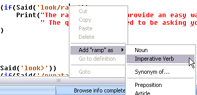

Since adding new words to the vocabulary is a frequent task (scripts won't compile if words in their Said strings aren't in the vocabulary), SCI Companion lets you right-click on any word in the script, and add it to the vocabulary. You can choose the word class to which to add it. You can even add it as a synonym of another word.
